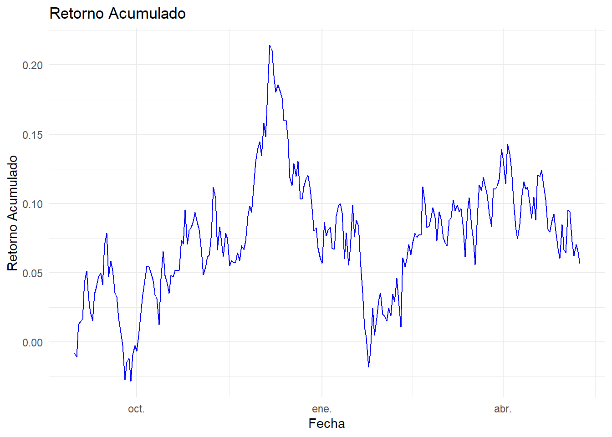

print("Hola mundo")[1] "Hola mundo"Finanzas en R — Desarrollo Asistido por IA
Positron, Claude Code y flujo de trabajo moderno
Sebastián Egaña Santibáñez (segana@fen.uchile.cl)
Nicolás Leiva Díaz (nleivad@fen.uchile.cl)
30 de agosto de 2026
En este notebook encontrarás comandos de terminal. Positron soporta ambos:
Algunos comandos son cross-platform (funcionan igual en ambos): - npm install -g ... ✅ - npx @anthropic-ai/claude-code ... ✅ - mistral-code ... ✅
Otros solo existen en Bash y necesitan equivalente en PowerShell: - ❌ touch archivo.R → ✅ $null | Out-File archivo.R (PowerShell)
En este notebook, cuando haya diferencias, mostraré ambos comandos. Si usas Bash en Windows (Git Bash, WSL), puedes usar los comandos Linux directamente.
🐙 https://github.com/sebaegana
💼 https://www.linkedin.com/in/sebastian-egana-santibanez/
En las finanzas cuantitativas modernas, la velocidad y la precisión al codificar son críticas. Enfrentas tres problemas recurrentes:
Las herramientas de IA generativa resuelven esto. En este curso usaremos: - Claude Code (recomendado, pero requiere cuenta pagada) - Mistral Vibe (alternativa gratuita, sin tarjeta de crédito)
Usaremos herramientas de IA generativa (Claude Code o Mistral Vibe) dentro de Positron (nuevo IDE para R/Python) para desarrollar análisis financieros reproducibles.
La meta: que escribas menos código boilerplate y dediques más tiempo a pensar en finanzas.
Tú eliges la herramienta que mejor se adapte a tu situación: - Con presupuesto → Claude Code (superior en finanzas) - Sin presupuesto → Mistral Vibe (gratis, muy bueno para aprender)
Positron es una IDE moderna y de código abierto para R y Python, desarrollada por Posit Software (los creadores de RStudio). A diferencia de RStudio, Positron está construida sobre los mismos fundamentos que Visual Studio Code, lo que significa:
| Aspecto | RStudio | Positron |
|---|---|---|
| Base | Qt (propietaria) | VS Code (abierta, extensible) |
| Soporte IA nativo | No | Sí (Claude, GitHub Copilot, etc.) |
| Integración Python | Limitada | Primera clase |
| Extensiones | Pocas | Acceso a 20k+ extensiones de VS Code |
| Performance | Bueno | Muy bueno (más ligero) |
| Curva de aprendizaje | Baja | Baja (si usaste VS Code o RStudio) |
Verifica la instalación: - Abre Positron. - Ve a Terminal → New Terminal. - Ejecuta R --version (debería mostrar la versión de R).
Realidad importante: Los modelos de IA de alta calidad requieren API keys pagadas.
Claude Code es una herramienta CLI que conecta Positron con Claude (modelo de IA de Anthropic). Te permite interactuar con Claude directamente en la terminal de Positron, pidiendo que genere, explique, depure y documente código R.
Ventajas: - Muy preciso en finanzas y R - Excelente para debugging y explicaciones - Mejor relación costo-beneficio
Costo: Requiere API key pagada (pero tiene límites gratuitos para empezar)
clases/ enseña R sin IANo recomendamos alternativas “gratuitas” que resultan siendo pagadas (Mistral, OpenAI, Gemini) o herramientas que están en desarrollo.
Todos necesitan Node.js 18+. Luego elige una de las dos opciones.
Descarga desde https://nodejs.org/ (versión LTS recomendada)
Instala normalmente
Verifica en terminal:
Crea cuenta y obtén API key:
sk-ant-...)Instala Claude Code:
Configura API key (varía por SO):
Windows (PowerShell):
macOS/Linux (Bash):
Para hacerlo permanente, agrega a ~/.bashrc, ~/.zshrc o equivalente de Windows.
Verifica:
No necesitas cuenta de pago:
Instala Mistral Vibe:
Verifica:
Primer uso (no requiere configuración de API):
| Criterio | Claude Code | Mistral Vibe |
|---|---|---|
| Costo | Pagado | Gratis |
| Precisión en Finanzas | Muy alta | Buena |
| Facilidad de uso | Muy fácil | Muy fácil |
| Mejor para debugging | ⭐⭐⭐⭐⭐ | ⭐⭐⭐ |
| Mejor para aprender R | ⭐⭐⭐⭐⭐ | ⭐⭐⭐⭐ |
Recomendación: Si puedes pagar, usa Claude Code. Si no, Mistral Vibe es una excelente alternativa.
Error: “El término ‘npx @anthropic-ai/claude-code’ no se reconoce…”
Soluciones:
Usa npx correctamente:
npx descarga y ejecuta el paquete automáticamenteVerifica que Node.js esté instalado:
Reinicia PowerShell/Terminal:
Asegúrate de tener API key configurada:
Si nada funciona, usa Mistral Vibe (gratis):
En R, el primer ejercicio es imprimir un saludo. Lo harías así:
Luego, exploras variables:
[1] "2 5 Finanzas en R"Tiempo invertido: ~5 minutos. Repetitividad: tienes que recordar la sintaxis print(), paste(), la asignación con <-.
Pasos:
Abre Positron y crea un archivo hello_world.R:
hello_world.RAbre Claude Code o Mistral Code en la terminal:
Copia y pega este prompt directamente en la terminal interactiva:
Crea un script R que imprima "Hola mundo" y luego prueba
con dos variables x=2, y=5 y una cadena, imprimiendo todo junto.
El resultado debería mostrar algo como: 2 5 Finanzas en RListo: Claude/Mistral generará el código, lo explica, y tú lo copias al archivo.
Resultado: Claude genera algo como:
Pero además te muestra una explicación:
“Cree un script básico que imprime un saludo. Usé
print()para la salida,<-para asignar valores, ypaste()para concatenar. El parámetrosepcontrola el separador entre elementos.”
Ventaja: no solo obtienes el código, sino una explicación instantánea. Así aprendes mientras usas.
Cuando estés dentro de Claude Code o Mistral Code (terminal interactiva), copia y pega estos prompts de ejemplo:
❌ Mal:
Genera código para analizar datos✅ Bien:
Genera un script R que cargue un CSV de retornos diarios,
calcule estadísticas descriptivas (media, desviación estándar, min, max)
y genere un gráfico con ggplot2❌ Mal:
Carga datos de una base de datos✅ Bien:
Escribe un script R que se conecte a SQLite (usa el paquete DBI y RSQLite),
lea una tabla 'precios' y muestre las primeras 10 filas❌ Mal:
Limpia datos✅ Bien:
Usa tidyverse para limpiar un dataframe:
- Elimina filas con NAs
- Convierte fechas a formato Date
- Filtra observaciones posteriores a 2020Explica qué hace cada línea de este script, paso a paso:
[pega aquí el código]Si el código genera un error, simplemente pega el error:
El script me da este error:
[pega aquí el error]
¿Cuál es el problema y cómo lo arreglo?Ahora harás un análisis financiero simple guiado por Claude Code.
Tienes un archivo CSV con retornos diarios de una acción (o lo simularemos). Quieres: 1. Cargar los datos. 2. Calcular retornos acumulativos. 3. Generar un gráfico. 4. Calcular estadísticas de riesgo (volatilidad, Sharpe ratio).
En Claude Code o Mistral Code, copia y pega este prompt:
Crea un script R que simule 252 retornos diarios (1 año) de una acción,
con media 0.05% y desviación estándar 1.5%.
Guarda el resultado en un CSV llamado 'retornos.csv'
con columnas 'fecha' (fechas consecutivas desde hoy) y 'retorno'.Claude generará algo como:
── Attaching core tidyverse packages ──────────────────────── tidyverse 2.0.0 ──
✔ dplyr 1.1.4 ✔ readr 2.1.5
✔ forcats 1.0.0 ✔ stringr 1.5.1
✔ ggplot2 3.5.2 ✔ tibble 3.3.0
✔ lubridate 1.9.4 ✔ tidyr 1.3.1
✔ purrr 1.0.4
── Conflicts ────────────────────────────────────────── tidyverse_conflicts() ──
✖ dplyr::filter() masks stats::filter()
✖ dplyr::lag() masks stats::lag()
ℹ Use the conflicted package (<http://conflicted.r-lib.org/>) to force all conflicts to become errorsCopia este código a un nuevo archivo simular_datos.R en Positron y ejecútalo (Ctrl+Enter o Cmd+Enter).
En Claude Code o Mistral Code, copia y pega este prompt:
Lee el archivo retornos.csv,
calcula los retornos acumulativos (usa cumprod(1 + retorno) - 1),
grafica los retornos acumulativos con ggplot2 en función de la fecha,
calcula la media, desviación estándar y el ratio de Sharpe
(asumir tasa libre de riesgo = 0),
e imprime estos estadísticos.Claude generará:
Rows: 252 Columns: 2
── Column specification ────────────────────────────────────────────────────────
Delimiter: ","
dbl (1): retorno
date (1): fecha
ℹ Use `spec()` to retrieve the full column specification for this data.
ℹ Specify the column types or set `show_col_types = FALSE` to quiet this message.
Media de retornos: 0.0003168098 Volatilidad anualizada: 0.2236562 Sharpe Ratio: 0.356959 Si algo falla, simplemente pega el error en Claude Code/Mistral Code:
El script da este error:
Error: object 'retorno_acumulado' not found
¿Qué está mal y cómo lo arreglo?Pide que agregue comentarios:
Agrega comentarios en español explicando qué hace cada sección del script,
incluyendo qué paquetes usamos y por qué.
Aquí está el código:
[pega el código aquí]El flujo ideal en un análisis financiero con IA es:
Idea financiera
↓
Describe qué quieres a Claude Code
↓
Claude genera código
↓
Ejecuta en Positron (prueba rápida)
↓
¿Funciona?
├─ No → Pídele a Claude que lo depure
│
└─ Sí → ¿Resultado coherente?
├─ No → Ajusta el prompt, reitera
│
└─ Sí → Integra en tu análisis principal
Ventaja clave: en lugar de pasar 2 horas escribiendo código, pasas 20 minutos iterando con Claude. El ahorro acumulado es enorme en un semestre.
Replicar el flujo de trabajo aprendido con un dataset distinto: usa datos financieros reales (ej: puedes obtenerlos de Yahoo Finance, FRED, o una BD local).
Obtén o simula datos: retornos de 3 acciones (ej: Apple, Google, Microsoft) durante 1 año.
Opción A (simulado con Claude):
Opción B (datos reales): descarga desde https://finance.yahoo.com/
Analiza con Claude Code:
Pídele a Claude que genere un script que haga todo esto de una vez.
Entrega:
.R).Esta sección contiene 5 preguntas para evaluar tu comprensión de la clase.
⚠️ Contenido protegido: Las preguntas solo están disponibles para el profesor. Ingresa la contraseña para desbloquear.
Total: 100 puntos | Tiempo: 30-45 minutos
Explica en 3-4 líneas por qué usamos herramientas de IA generativa en un curso de finanzas cuantitativas. ¿Cuáles son los tres problemas principales que resuelven?
Describe los pasos principales para instalar y configurar Claude Code en Windows PowerShell. ¿Qué es lo más importante después de instalar Node.js?
Reescribe este prompt MALO para que sea EFECTIVO según las 5 reglas de prompting:
Genera código R para analizar datos financieros
Describe paso a paso cómo usarías Claude Code para:
¿Cuáles son las 3 limitaciones principales de usar IA generativa en análisis financiero? ¿Cómo se mitigan?
📌 Nota: Las respuestas y rúbricas están disponibles solo para el profesor en el archivo RESPUESTAS_PROFESOR.md
En las siguientes clases: - Usaremos Claude Code para generar análisis de agregación, uniones y transformaciones de datos (Clase 02). - Haremos regresión y modelado financiero asistido por IA (Clase 03). - Construiremos simulaciones de Monte Carlo y backtests.
La meta: que al final del curso, no solo entiendas R y finanzas, sino que sepas cómo herramientas modernas de IA aceleran tu desarrollo profesional.